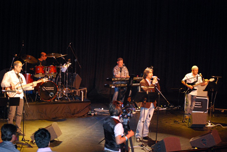
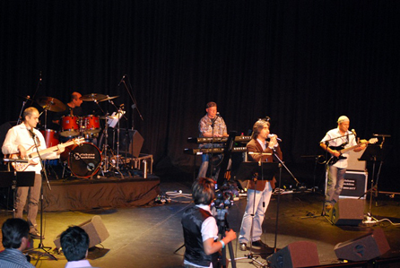

Dawud Sarkhosh
 

various picture of Dawud Sarkhosh
A multi talented Artist, Dawood Sarkhosh was born in 1971 in the province of Urozgan in Central Afghanistan .
He started to compose poetry at the age of 9 and play Dumbura and to sing at the age of 17.
He studied the Hazaragi Danbura for a short period with the help of his elder brother Sarwar Sarkhosh,
and studied Hamoonia/Accordion under the Pakistani composer the late Arbab Ali Khan – from the province of Sind .
At a time when Afghan music had fallen into obscurity under the despotism of fundamentalists.
Sarkhosh revived the art by creating songs inspired by a sense of nationalism and suffering in exile.
His songs were not commercial, they were artistic reflection of the nostalgia and the bitter taste of refugee
life experienced by millions of Afghan refugees throughout the world. They rush to his
concerts in their thousands to share their refugee culture with him and enjoy it for a few hours.
Discography:
Up till now Dawood Sarkhosh has released 3 CDs which are available in almost every Afghani
shop around the world. His first CD "Sarzamin-e- Man" (My Homeland) came out in England
in 1998 and shortly after the second CD "Parijoo" (Fairy) was released in 2000.
The third CD "Sepeed -o-Siyah" (White & Black) has been released in 2004.
Today Sarkhosh is considered as an accomplished artist and one of the most popular and
distinguished artistic figures of Afghanistan.
Dawood Sarkhosh is married to K. Nekzad Sarkhosh. They have 3 sons Saboor, Zulfiqar and Yasir.
admin bio albums music video concerts pictures guest book links contact